Botafogo
Clube atual
17 jogos · 0 gols
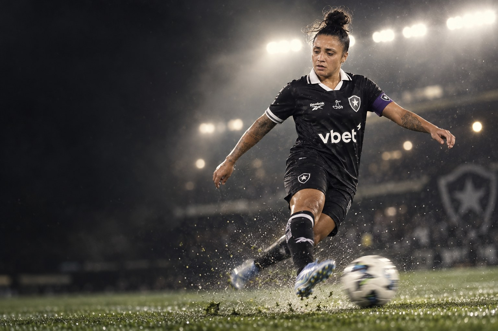
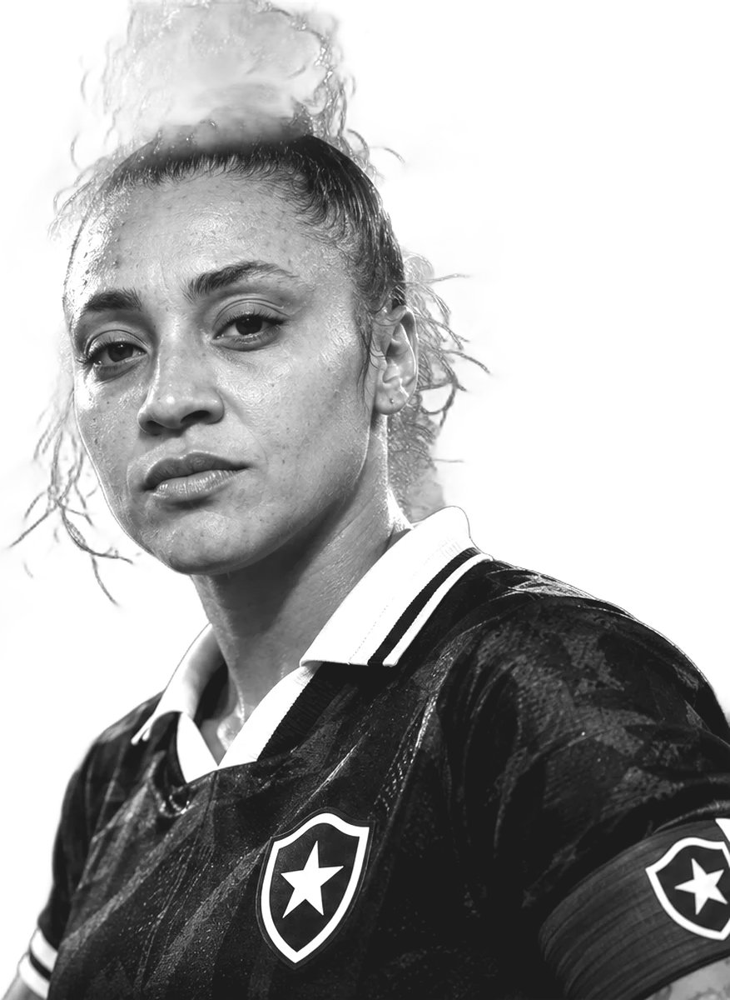
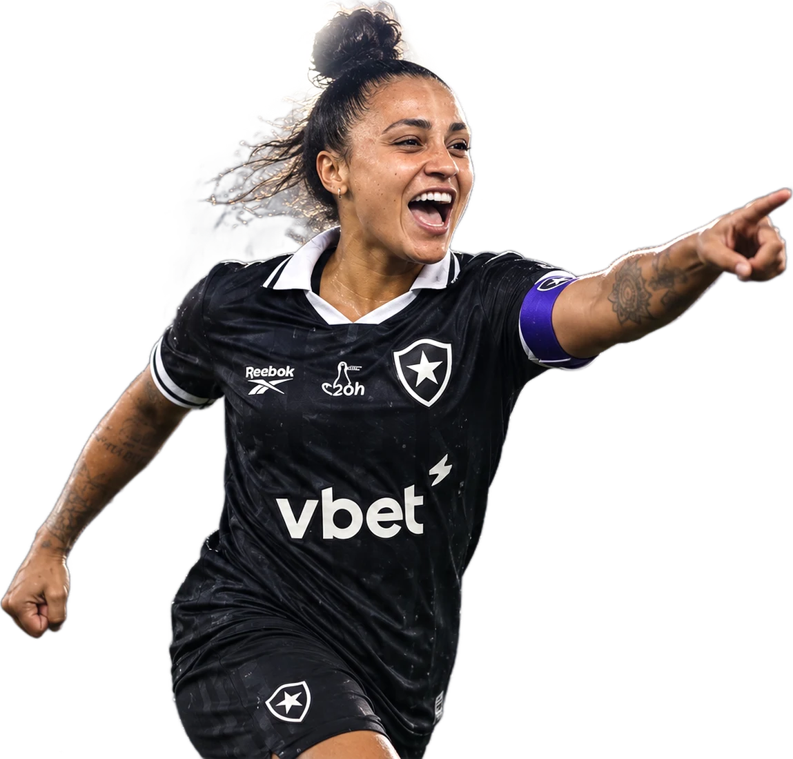
“Vai ser na raça e tenho certeza que vamos em busca do título.”
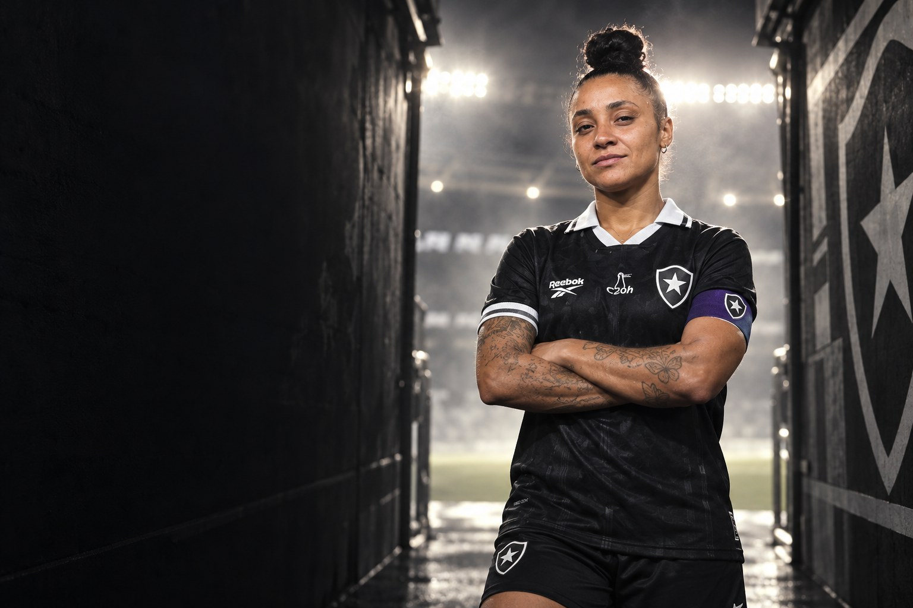
Sobre
Tauane Sousa Gomes é futebolista profissional e atua como volante. Clube atual: Botafogo.
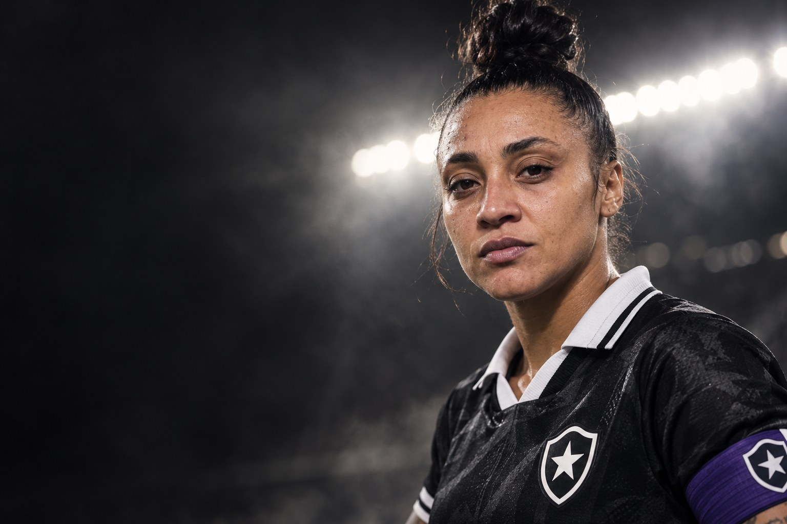
“Vai ser na raça e tenho certeza que vamos em busca do título.”Zóio, ao site do Avaí, antes da estreia do Avaí Kindermann na Libertadores de 2021
Perfil
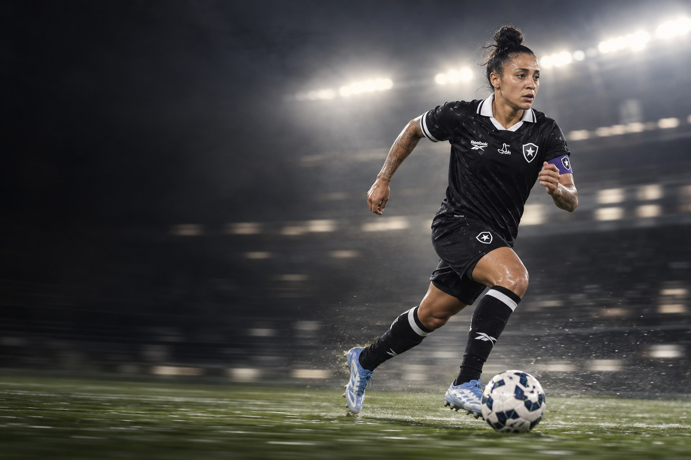
Carreira em números
Carreira
Clubes em destaque
17 jogos · 0 gols
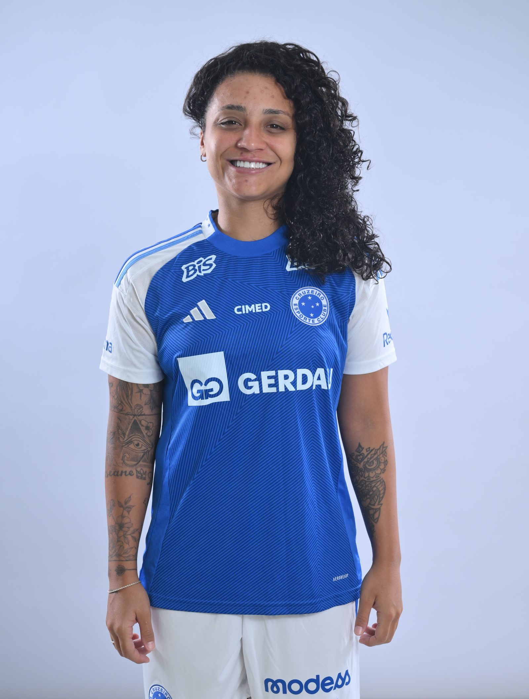
14 jogos · 1 gols
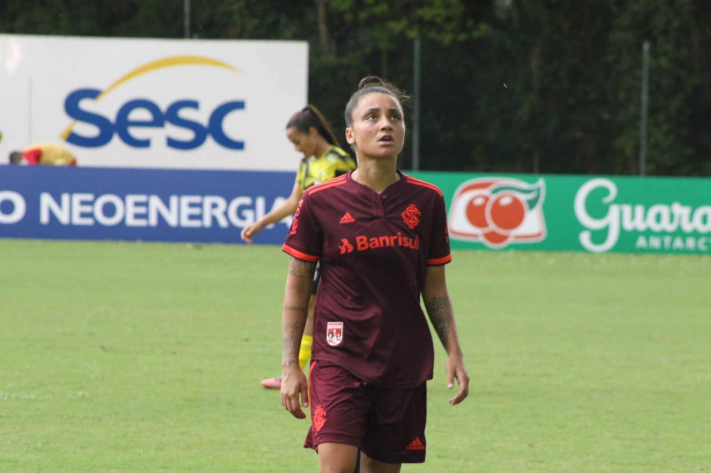

48 jogos · 1 gols
Conquistas
Galeria
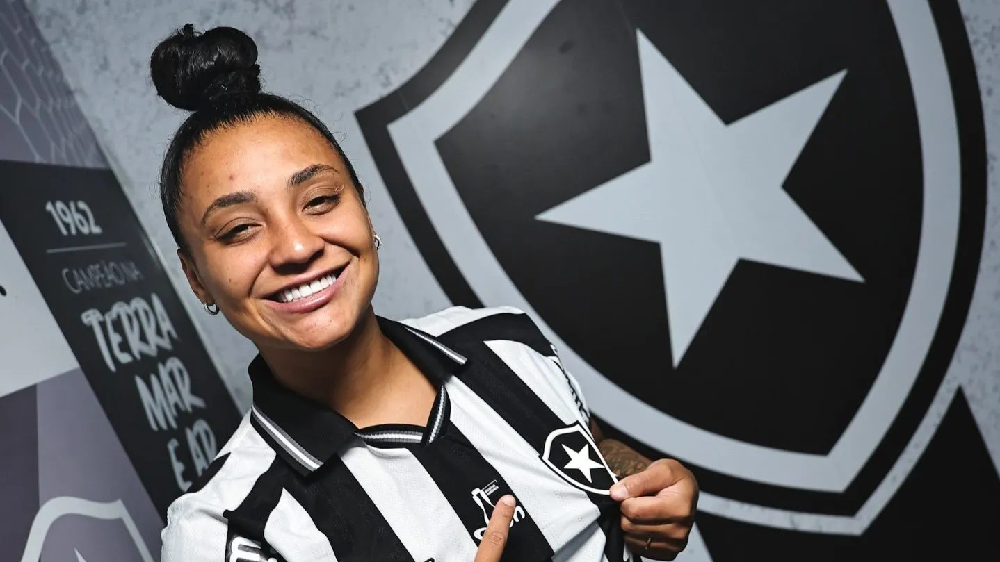
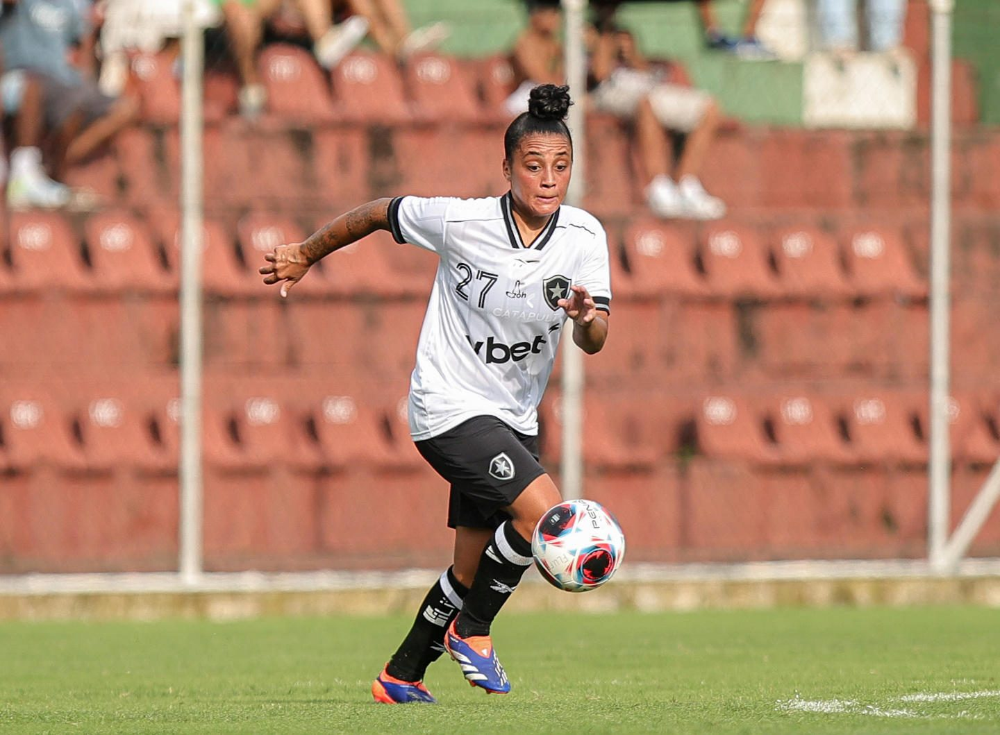
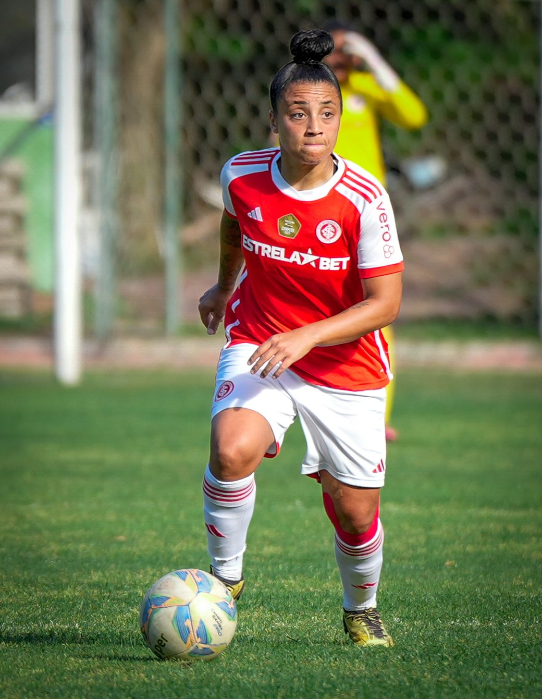
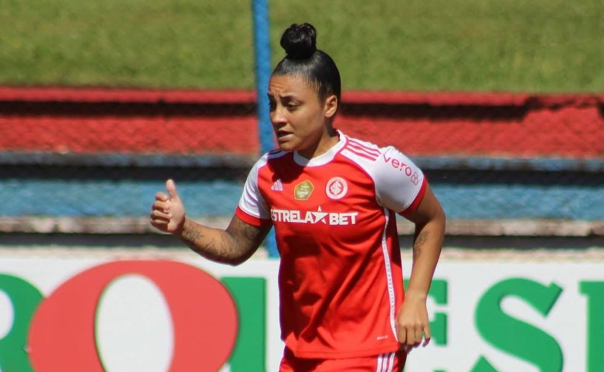
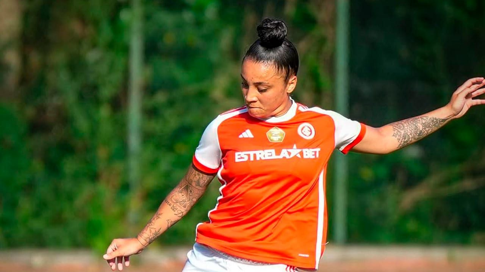
Currículo esportivo
| Temporada | Clube | País | Jogos | Gols | Assistências |
|---|---|---|---|---|---|
| 2026 | 17 | 0 | 0 | ||
| 2025 | Cruzeiro | 14 | 1 | 0 | |
| 2024 | 15 | 1 | 0 | ||
| 2023 | 23 | 0 | 0 | ||
| 2022 | 10 | 0 | 1 | ||
| 2021 | Avaí/Kindermann | 18 | 2 | 0 | |
| 2020 | Avaí/Kindermann | 20 | 3 | 1 | |
| 2019 | Avaí/Kindermann | 24 | 6 | 0 | |
| 2018 | Kindermann | 15 | 3 | 0 | |
| 2017 | Kindermann | 4 | 0 | 0 | |
| 2016 | Chapecoense | 3 | 0 | 0 | |
| 2016 | Centro Olímpico | 4 | 0 | 0 |
Jogos, gols e assistências conforme a base estatística Ogol. O clube atual segue o anúncio oficial do clube.
Na mídia
Contato profissional
Assuntos profissionais, comerciais e de carreira: fale pelo perfil oficial da atleta.
Mídia kit
International profile